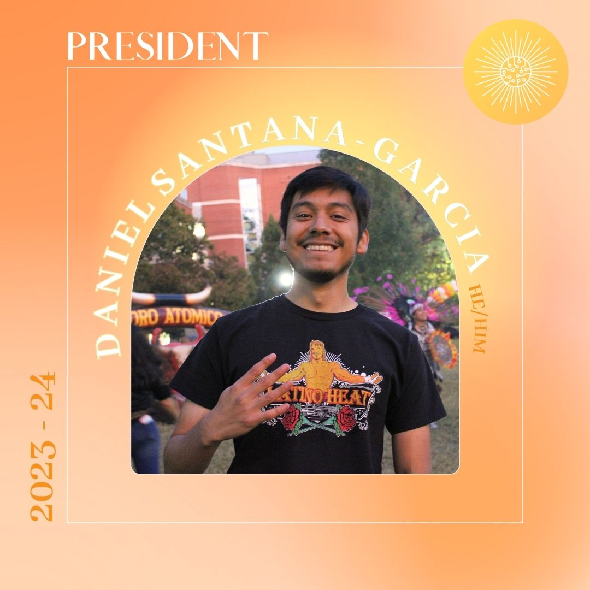
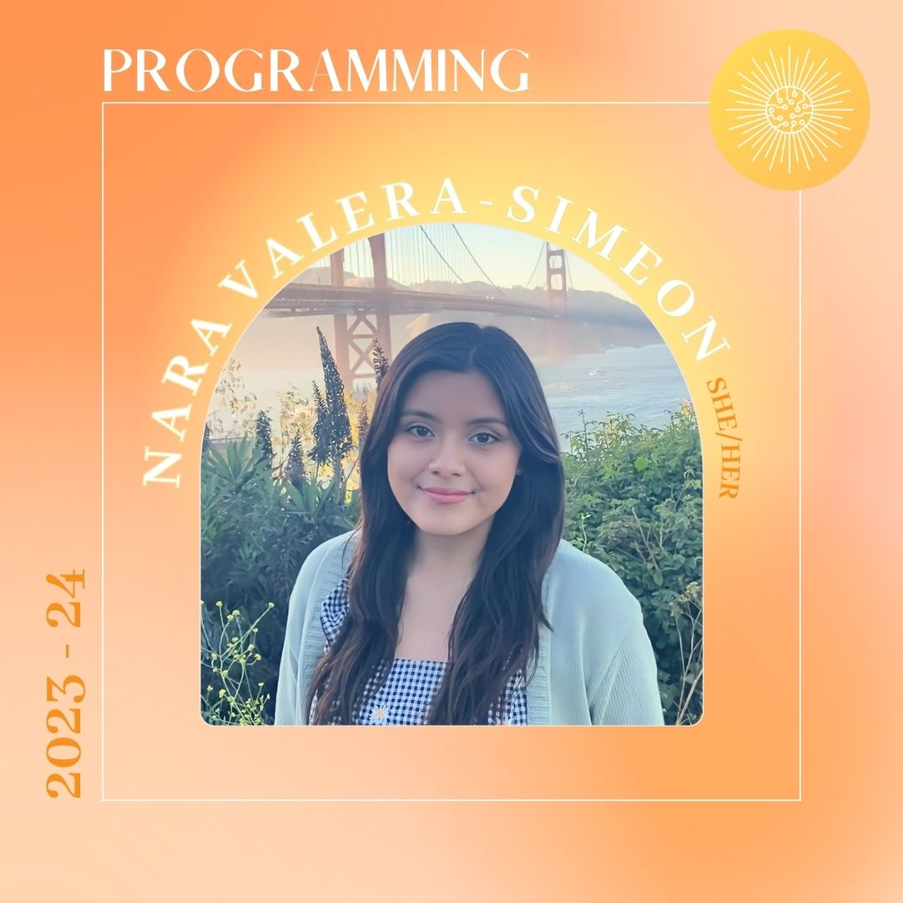

About Us
Latinos in Tech's founding academic year was 2023-2024. In our inaugural year, we built a network of Latinx students from various disciplines who are interested in tech.
We deliver social, professional development, and networking events throughout the year for our members to thrive!
Executive Board 2023-2024
President
🎓Class year: 2024
📚Majors and minor: Statistics and Economics Majors, Data Science Minor
🌱Roots: Mexican
🏡Hometown: Siler City, NC
Internal Vice-President
🎓Class year: 2024
📚Majors and minor: B.S. Information Science & B.A Political Science and a Data Science Minor
🌱Roots: Mexican
🏡Hometown: Charlotte, North Carolina
External Vice-President
Note: Transitoned to External Vice-President role from Programming Co-Chair
🎓Class year: 2024
📚Major and minors: Information Science Major, Data Science and Statistics Minors
🌱Roots: Peruvian
🏡Hometown: Durham, North Carolina